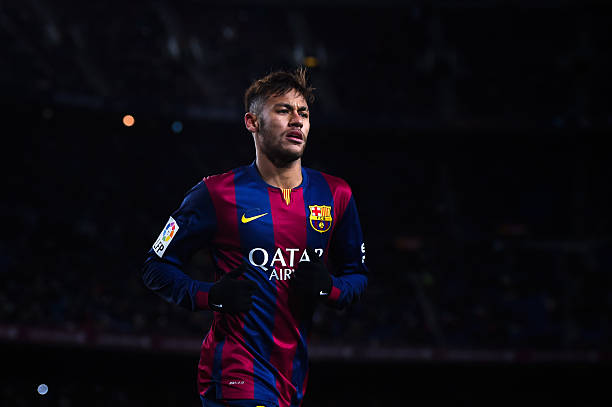
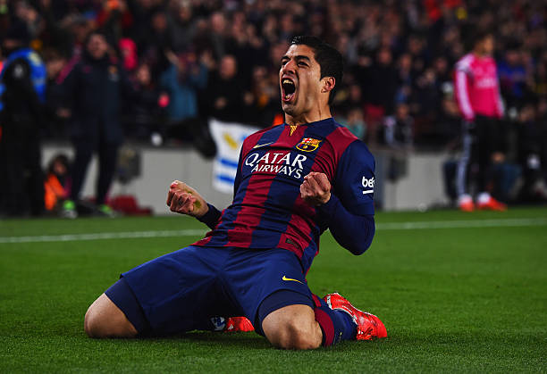

| # | Nombre | Paterno | Materno |
|---|---|---|---|
| 1 | Neymar da Silva | Santos | Júnior |
| 2 | Lionel Andrés | Messi | Cuccittini |
| 3 | Luis Alberto | Suárez | Díaz |

Neymar
Neymar disputó 123 partidos en LaLiga con el Barcelona, 112 de ellos como titular, y marcó 68 goles. Su mejor campaña liguera fue la 2015/2016, en la que anotó 24, tal y como recuerda OPTA.
Mas informaciónMessi
El astro argentino se marcha del club blaugrana tras liderar la mejor etapa de la historia del Barça · Leo Messi ha marcado un total de 672 goles con el FC Barcelona a lo largo de toda su carrera.
Mas información

Suarez
Suárez convirtió 198 goles en su carrera con el Barça y 21 fueron en esta temporada 2020/21. El último fue en la histórica goleada en los cuartos de final de la Champions League ante el Bayern Munich por 2-8.
Mas información